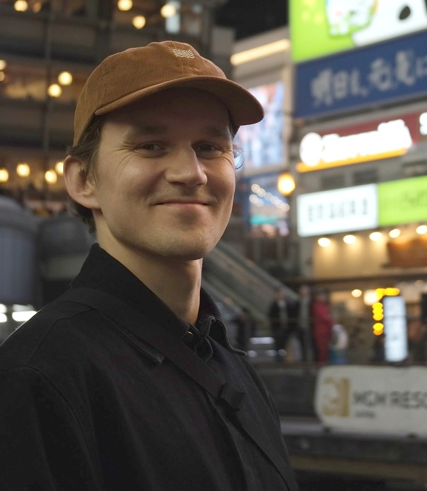
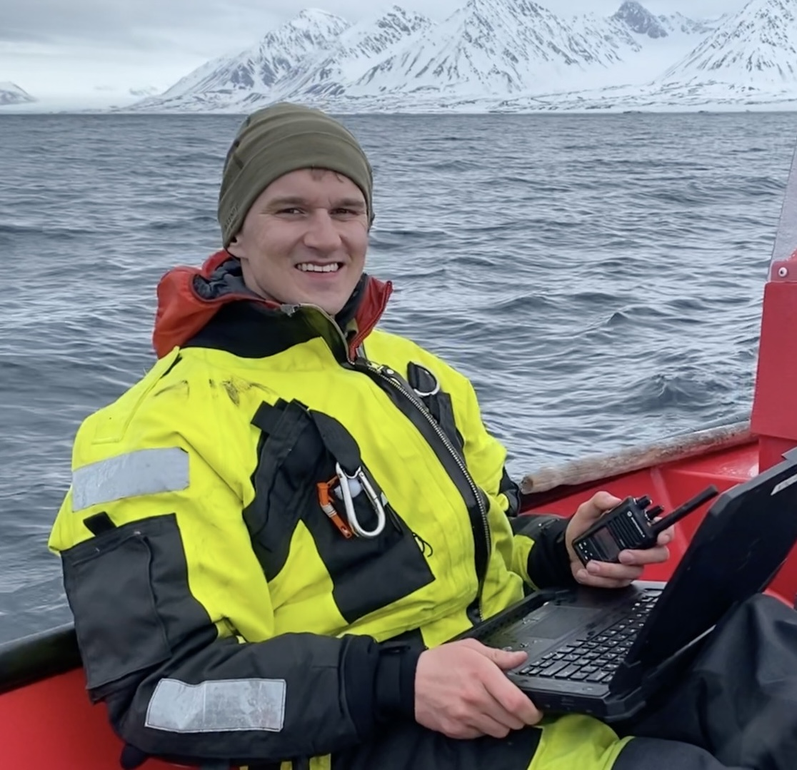
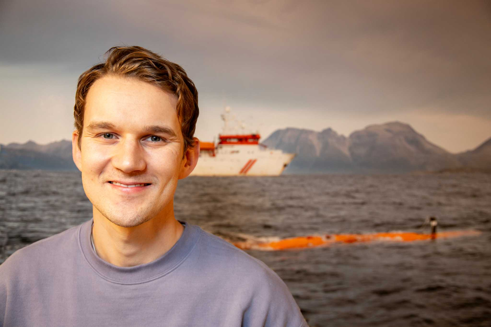
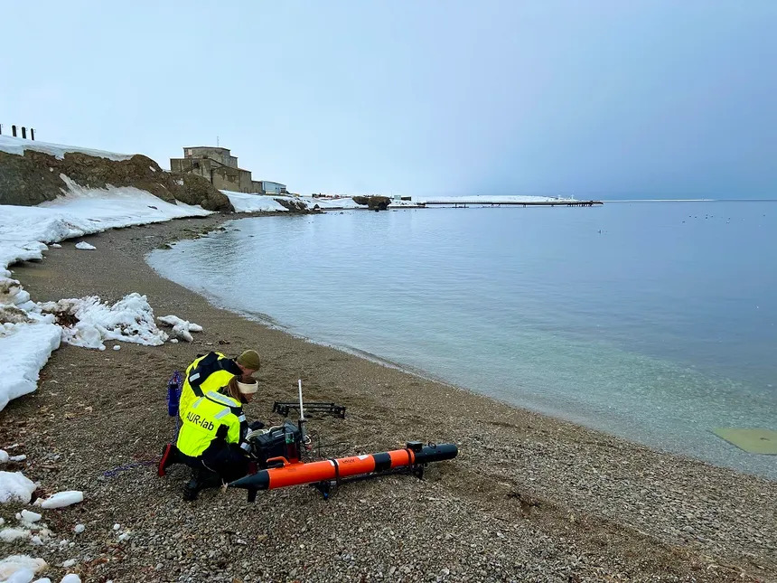
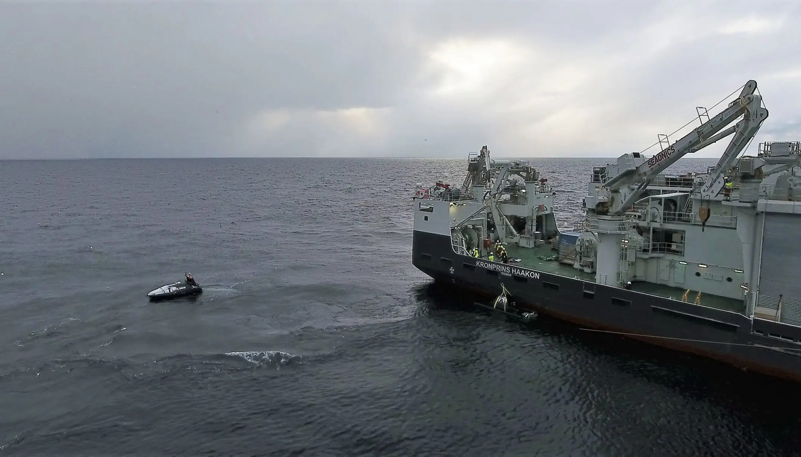

Marine Roboticist
Engineer at GeoNord AS
Applied researcher, engineer, and software developer in marine robotics, with experience across academia, defence, and industry.

I hold a PhD in Marine Technology with specialisation in Marine Cybernetics from NTNU (2024), where my dissertation Safe Autonomy in Marine Robotics developed new methods for autonomous risk awareness and control for marine robotics. I later worked as a scientist at the Norwegian Defence Research Establishment (FFI), developing autonomy algorithms for the HUGIN AUV, and serving as an AUV operator. I am currently employed as an engineer at GeoNord AS, where I work with seafloor and terrain mapping using ship-based and drone-based multibeam echosounder, LiDAR and camera systems.

6. november 2024
Er det mulig å programmere inn redsel for døden i autonome undervannsroboter? Forsker Jens Einar Bremnes ved Forsvarets forskningsinstitutt undersøker hvordan selvbevaringsmekanismer kan bygges inn i AUV-er — og hva det egentlig vil si for en robot å «frykte» å bli ødelagt.
Read article →
14. juni 2022
Et banebrytende forsøk i Kongsfjorden på Svalbard: forskere fra NTNU brukte småsatellitter, droner, autonome båter og undervannsroboter samtidig for å kartlegge marine økosystemer fra overflate til havbunn.
Read article →
4. mai 2021
A Nansen Legacy Project blog post exploring turbulent mixing processes in the deep ocean — how water masses interact and blend far below the surface, and what this means for Arctic marine ecosystems.
Read article →Python library for Bayesian network inference over geospatial data. Combines heterogeneous data sources (GeoTIFF, WCS, in-memory arrays) to generate probabilistic spatial risk maps. Used for avalanche risk modeling.
Open to collaborations, research discussions, and opportunities in marine autonomy and ocean technology.